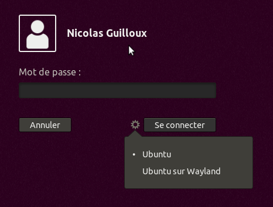
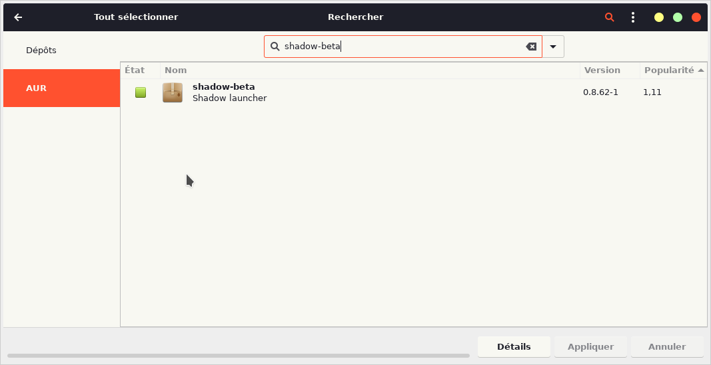

Arch Linux
We strongly recommand you to use the AppImage instead of following this tutorial as it makes things easier.
The application works well on Arch Linux now without any tweaks. There are 2 options to install it: from an AUR package manager (yay, yaourt, etc) or from directly the PKGBUILD. We recommand to use the first option.
Good to know before installing
You will need to add your user to the input group to use Shadow: sudo gpasswd -a $USER input
To apply this, you will need to log out your session/reboot your computer.
Shadow does not work yet on Wayland. Make sure you are using Xorg. The following command should return x11: echo $XDG_SESSION_TYPE. If it returns Wayland, try to check if the environnement provides Xorg on the login screen.

For all distribution, you may experience an issue with the VA-API which is involved in the decoding process. Please follow the tutorial we made right here.
From AUR
| Package manager | Command |
|---|---|
| Yay | yay -S shadow-beta |
| Yaourt | yaourt -S shadow-beta |
| Packer | packer -s shadow-beta |
| Pacaur | pacaur -s shadow-beta |
You can also search the package from your favorite GUI.
Using AUR allows the Shadow application to be updated when the system updates itself, bringing you always the last version.
Using directly the PKGBUILD
Clone the git and go in the Arch folder: git clone https://github.com/NicolasGuilloux/blade-shadow-beta && cd blade-shadow-beta/Arch
A script was made to make it quickly: chmod +x install_arch.sh && ./install_arch.sh